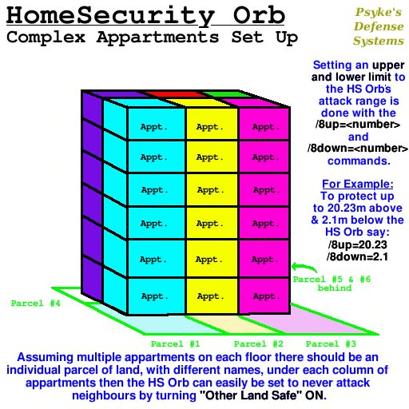

A /8reset parancs visszaállítja az Orb-ot a Settings notecard alapértékeire, de a nevek nem vesznek el.
A /8reset parancs visszaállítja az Orb-ot a Settings notecard alapértékeire, de a nevek nem vesznek el.| Kezdőlap > HSOrb Dokumentáció > Bérlés | PSYKE'S DEFENSE SYSTEMS
® |
Bolt |
A /8reset parancs visszaállítja az Orb-ot a Settings notecard alapértékeire, de a nevek nem vesznek el.
|
Minden
Orb-nak 20 méternél nagyobb távolságra kell lennie egymástól, különben a menük mindegyik, 20 méteren belüli
HS Orb-tól megjelennek. Ha a HS Orb-okat nem lehet 20 méternél nagyobb távolságra elhelyezni,
állíts be minden egyes, 20 méteren belüli HS Orb-nak eltérő csatornát.
Ezt a HomeSecurity Channel notecard szerkesztésével teheted meg a HS Orb-on belül, a channel=8 érték megváltoztatásával. Minden, 20 méteren belüli HS Orb-nak eltérő számra van szüksége. |